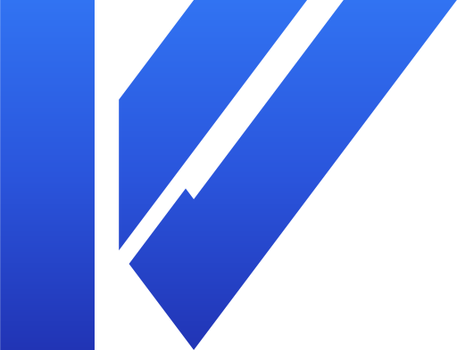
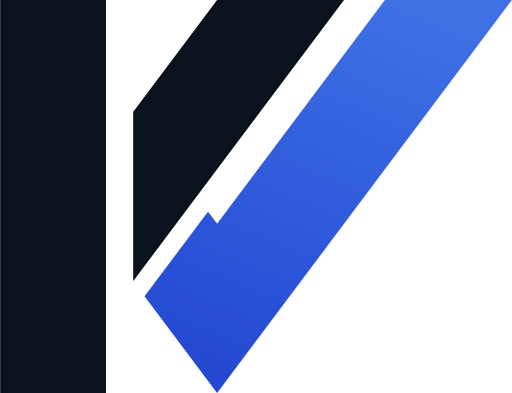
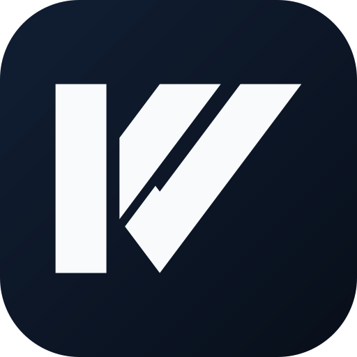
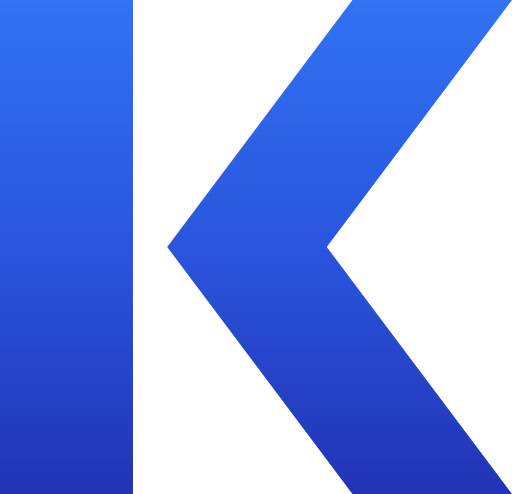
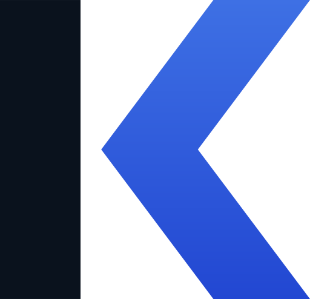
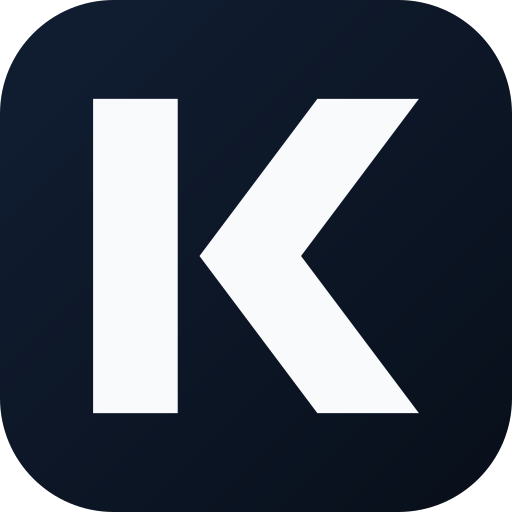

A perna do K continua e sobe como o traço direito de um V de altura total, paralelo ao braço, com o mesmo respiro do mark original.

Barra e braço em navy; o V inteiro é o acento azul. A cor conta a história: o K termina, o V emerge.

Versão em negativo sobre tile navy.

Braço e perna viram uma peça única: um V rotacionado 90°. De frente é K; girado, é o V da Kovex. Compacto e simétrico.

Barra navy, chevron em gradiente azul. O V rotacionado é o protagonista da marca.

Versão em negativo sobre tile navy.